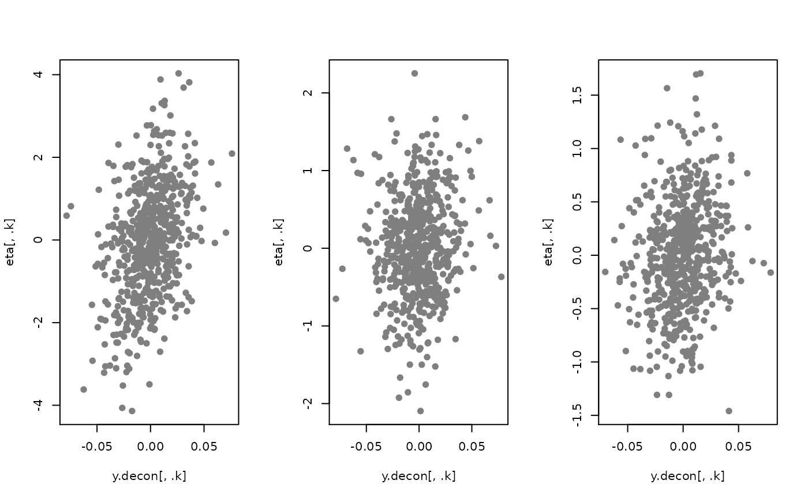

fit.fqtl.deconv.RdVariational deconvolution of matrix
fit.fqtl.deconv(
y,
weight.nk,
svd.init = TRUE,
model = c("gaussian", "nb", "logit", "voom", "beta"),
x.mean = NULL,
x.var = NULL,
right.nn = FALSE,
do.hyper = FALSE,
tau = NULL,
pi = NULL,
tau.lb = -10,
tau.ub = -4,
pi.lb = -4,
pi.ub = -1,
tol = 1e-04,
gammax = 1000,
rate = 0.01,
decay = 0,
jitter = 0.1,
nsample = 10,
vbiter = 2000,
verbose = TRUE,
mu.min = 0.01,
print.interv = 10,
nthread = 1,
rseed = NULL,
options = list()
)[n x m] response matrix
(non-negative) weight matrix to help factors being mode interpretable
Initalize by SVD (default: TRUE)
choose an appropriate distribution for the generative model of y matrix from c('gaussian', 'nb', 'logit', 'voom', 'beta') (default: 'gaussian')
[n x p] covariate matrix for mean change (can specify location)
[n x r] covariate marix for variance#'
non-negativity in factored effect (default: FALSE)
Hyper parameter tuning (default: FALSE)
Fixed value of tau
Fixed value of pi
Lower-bound of tau (default: -10)
Upper-bound of tau (default: -4)
Lower-bound of pi (default: -4)
Upper-bound of pi (default: -1)
Convergence criterion (default: 1e-4)
Maximum precision (default: 1000)
Update rate (default: 1e-2)
Update rate decay (default: 0)
SD of random jitter for mediation & factorization (default: 0.01)
Number of stochastic samples (default: 10)
Number of variational Bayes iterations (default: 2000)
Verbosity (default: TRUE)
mininum non-negativity weight (default: 0.01)
Printing interval (default: 10)
Number of threads during calculation (default: 1)
Random seed
A combined list of inference/optimization options
################################################################
## Simulate weighted matrix factorization (e.g., cell-type fraction)
n <- 600
p <- 1000
h2 <- 0.5
X <- matrix(rnorm(n * p), n, p)
Y <- matrix(rnorm(n * 1), n, 1) * sqrt(1 - h2)
## construct cell type specific genetic activities
K <- 3
causal <- NULL
eta <- matrix(nrow = n, ncol = K)
for(k in 1:K) {
causal.k <- sample(p, 3)
causal <- rbind(causal, data.frame(causal.k, k = k))
eta[, k] <- eta.k <- X[, causal.k, drop = FALSE] %*% matrix(rnorm(3, 1) / sqrt(3), 3, 1)
}
## randomly sample cell type proportions from Dirichlet
rdir <- function(alpha) {
ret <- sapply(alpha, rbeta, n = 1, shape2 = 1)
ret <- ret / sum(ret)
return(ret)
}
prop <- t(sapply(1:n, function(j) rdir(alpha = rep(1, K))))
eta.sum <- apply(eta * prop, 1, sum)
Y <- Y + eta.sum * sqrt(h2)
opt <- list(tol=1e-8, pi = -0, gammax=1e3, vbiter=10000, out.residual = FALSE,
do.hyper = FALSE, right.nn = TRUE)
out <- fit.fqtl.deconv(Y, prop, options = opt)
y.decon <- out$U$theta
par(mfrow = c(1, K))
for(.k in 1:K) {
plot(y.decon[, .k], eta[, .k], pch = 19, col = 'gray50')
}
